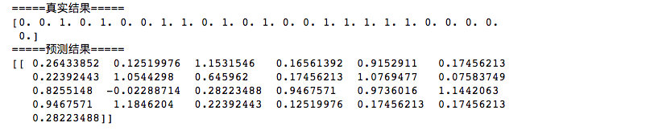
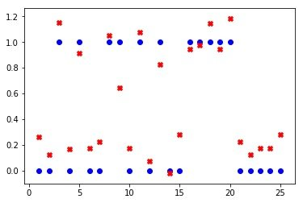
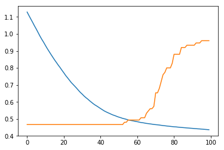
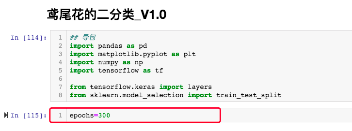
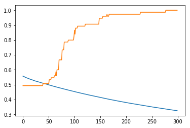
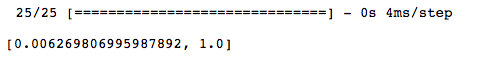
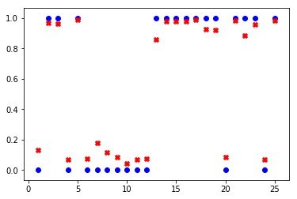

7. 调整模型
7.1 对模型的调整
目前模型预测的结果，是经过线性模型计算的数值型结果，可能比1大，也可能比0小。而真实的结果只有两个值 0 和 1。

如果可以在模型进行计算后，对结果进行处理，可以得到更接近真实值的结果。
即所有低于 0.5 的全部向 0 靠近，超过 0.5 的 全部向 1靠近

基于上述考虑，我们选用 sigmoid 函数作为分类函数，sigmoid函数图像如下：

对模型添加 分类函数，修改模型搭建的代码：
# 搭建模型
model = tf.keras.Sequential()
model.add(tf.keras.layers.Dense(units=1, input_dim=2))
model.summary() # 查看模型结构
为
# 搭建模型
model = tf.keras.Sequential()
model.add(tf.keras.layers.Dense(units=1, input_dim=2,activation="sigmoid"))
model.summary() # 查看模型结构
运行代码。
7.2 对编译模型参数的调整
由于添加了分类函数后，计算结果是0～1之间的数。如果继续使用均方差MSE来作为损失函数的话，计算结果将非常小，不利用优化器优化损失函数。
我们将调整损失函数为binary_crossentropy。
binary_crossentropy 是二分类交叉熵损失函数，交叉熵用来表示两个概率分布之间的平均差距。
均方差MSE与二分类交叉熵binary_crossentropy的公式如下：
将模型编译的代码：
# 编译模型
model.compile(optimizer='sgd', loss='mse')
替换为：
# 编译模型
model.compile(optimizer='sgd', loss='binary_crossentropy')
同时，可以在编译模型时增加一个评估的参数metrics，计算模型当前预测的准确率。再次修改编译模型的语句如下：
# 编译模型
model.compile(optimizer='binary_crossentropy', loss='mse',metrics=['accuracy'])
运行代码。
运行模型训练代码 。
在评估模型的部分，增加查看准确率的代码
# 输出准确率的变化
plt.plot(history.history['accuracy'])
完整的评估代码如下：
# 输出loss函数的变化
plt.plot(history.history['loss'])
# 输出准确率的变化
plt.plot(history.history['accuracy'])
同时查看loss（损失）函数和准确率的变化。一个可能的结果是：

会发现loss函数还有继续下降空间，可以增加训练批次。
7.3 对超参数的调整
在机器学习中，超参数 是指在开始训练之前设置值的参数。通常情况下，需要对超参数进行优化。在本项目中，涉及到第一个超参数是 训练批次epochs
出于对程序可维护性的考虑，我们把所有的超参数都写着程序开头导包代码下。
在导包代码下面，插入代码单元格，插入以下代码并运行：
## 超参数
epochs=300
代码位置为： 
epochs通常以10的幂次进行增减。由于上一次的训练成果已经很好，所以我们只增加了200次。
修改训练模型的语句
# 训练模型
history = model.fit(X_train, y_train,epochs=100)
为
# 训练模型
history = model.fit(X_train, y_train,epochs=epochs)
再次运行训练模型的语句。
查看loss（损失）函数的变化。一个可能的结果是：

会发现loss函数虽然仍处于下降空间，但另一个参数 acc 已经为 1.00 ，代表在训练集上的正确率达到了 100% ，继续训练的意义不大。
7.4 测试
运行在测试集上的评估代码，
# 在测试集上loss函数的值
model.evaluate(X_test,y_test)
得到的结果是：

1.0 即 100% 是一个非常好的结果。
继续运行 5.使用模型 的代码，会发现预测结果值全部落到了 0～1 之间，这个值是一个概率值，越靠近 0 代表是第一种鸢尾花（Iris-setosa）可能性越大，越靠近 1 代表是第二种 鸢尾花（Iris-versicolor）的可能性越大。

可视化的结果也越集中。 
对真实样本的预测结果也越准确，可达 0.9999
每个人的运行结果可能会略有不同，但整体相似。
7.5 对输出结果的处理
将输出的数值转换为文本型，将对真实样本预测的代码替换为以下代码：
# 使用真实的样本进行预测
target = model.predict(np.array([[6.5,3.9]]))[0][0]
#print(target)
if target>=0.5:
print("Iris-versicolor")
else:
print("Iris-setosa")
再次运行可以看到输出了鸢尾花的类别：Iris-versicolor
参考资料
1.Sigmoid函数 https://baike.baidu.com/item/Sigmoid%E5%87%BD%E6%95%B0/7981407
2.Sigmoid function https://en.wikipedia.org/wiki/Sigmoid_function